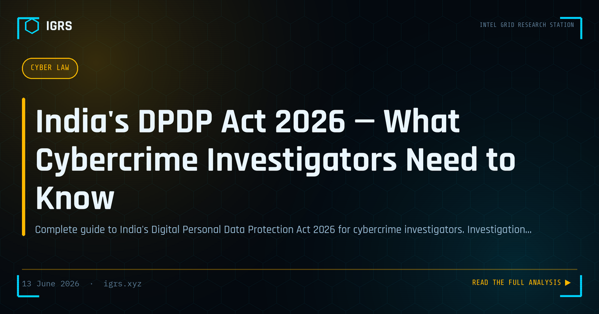

India's DPDP Act 2026 — What Cybercrime Investigators Need to Know
The DPDP Act 2026: A New Era for Investigators
The Digital Personal Data Protection Act fundamentally reshapes how personal data is handled in India — and that has direct, significant implications for investigators. Far from being a pure compliance burden, the DPDP Act creates both new constraints and new tools for those conducting cyber investigations. This guide explains what every investigator needs to know about operating under the DPDP framework.
Core Principles of the DPDP Act
| Principle | What It Means |
|---|---|
| Consent | Personal data processing generally requires consent |
| Purpose limitation | Data used only for the stated purpose |
| Data minimisation | Collect only what is necessary |
| Breach notification | Mandatory reporting of data breaches |
| Data principal rights | Individuals can access, correct, erase their data |
Investigation Exemptions Under Section 17
Critically for investigators, the DPDP Act provides exemptions under Section 17 for processing personal data in the interests of preventing, detecting, investigating, and prosecuting offences. This means lawful investigation is not blocked by the Act's consent requirements. However, the exemption is not a blanket licence — the processing must be necessary, proportionate, and conducted under proper authority with documented purpose.
How DPDP Affects Data Requests to Companies
When investigators request personal data from private companies — telecoms, banks, platforms — the DPDP Act shapes how those companies respond. Companies must balance their cooperation with lawful investigation against their data protection obligations. A properly framed legal request under Section 94 BNSS, citing the investigation exemption, enables companies to disclose data lawfully. Poorly framed or unauthorised requests may be refused on data protection grounds.
Data Localisation and Cloud Forensics
The DPDP framework and related rules influence where data is stored, which directly impacts cloud forensics. Data localisation requirements mean more Indian data is stored within India, potentially simplifying legal access compared to data held overseas. However, multinational platforms may still store data abroad, requiring MLAT processes. Understanding where a service stores its data is now an essential preliminary in any cloud investigation.
The New Data Theft Dimension
The DPDP Act strengthens the legal position against criminals who scrape, aggregate, and sell personal data. Data breaches and unauthorised processing now carry clearer liability and severe penalties. For investigators, this means cases involving stolen personal databases — common on the dark web and Telegram — have a stronger legal foundation, and the organisations that suffered the breach have clear reporting obligations that can aid the investigation.
Breach Notification and Investigation
The mandatory breach notification regime creates investigation triggers. When an organisation reports a breach to the Data Protection Board, it initiates a process that may involve investigation of how the breach occurred. For cyber investigators, breach notifications are both a source of cases and a compliance obligation for victim organisations. The interplay between CERT-In's 6-hour incident reporting and DPDP breach notification creates a layered reporting framework.
Penalties Under the DPDP Act
| Violation | Penalty |
|---|---|
| Failure to prevent breach | Up to ₹250 crore |
| Failure to notify breach | Significant penalties |
| Non-compliance with obligations | Graded penalties |
These substantial penalties make data protection a board-level concern and create strong incentives for organisations to cooperate with investigations and maintain the security controls that aid forensics.
Compliance Obligations for Investigation Teams
Investigation teams themselves process personal data and must align with the Act. Best practices include documenting the lawful basis for each data processing activity, applying data minimisation by accessing only what the investigation requires, securing investigative data appropriately, and ensuring retention aligns with necessity. Operating in compliance not only avoids liability but produces evidence that is more defensible in court.
Balancing Privacy and Investigation
The DPDP Act embodies a balance between individual privacy and legitimate state functions including law enforcement. For investigators, the practical effect is that lawful, proportionate, documented investigation continues unhindered, while arbitrary or excessive data access is constrained. This balance ultimately strengthens investigations by ensuring the evidence gathered is lawfully obtained and therefore admissible.
Preparing for the DPDP Environment
As the DPDP Act's provisions take full effect, investigators should familiarise themselves with the Section 17 exemptions, frame data requests properly to leverage them, understand data localisation's impact on access, and align their own data handling with the Act's principles. The investigators and organisations that adapt to the DPDP framework will find it provides both clearer authority for lawful investigation and a stronger legal foundation for prosecuting those who misuse personal data.